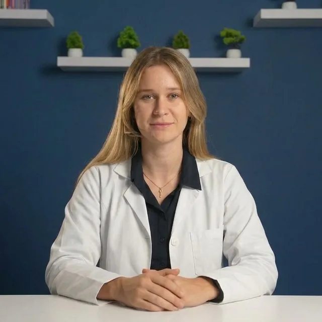

El núcleo
Neurociencia del Cambio de Hábitos
Ver qué incluye
Lo más importante de nuestro programa. Te explicamos el proceso por el que se crean nuevos hábitos y por qué la mayoría de las personas falla. La verdad es que crear un nuevo hábito no depende de tu fuerza de voluntad, sino de entender cómo funciona tu cuerpo.